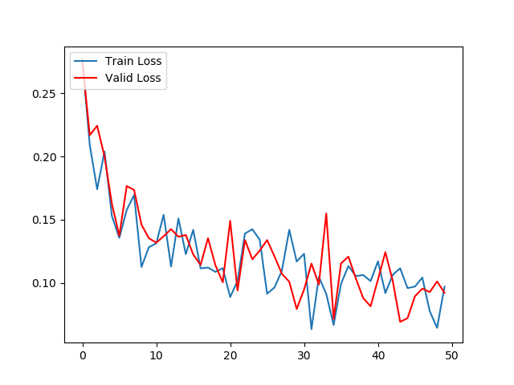

第五章:命名实体审核任务
5.1 任务介绍与模型选用¶
-
学习目标：
- 了解命名实体审核任务的相关知识。
- 了解选用的模型及其原因。
-
NE审核任务：
- 一般在实体进入数据库存储前，中间都会有一道必不可少的工序，就是对识别出来的实体进行合法性的检验，即命名实体(NE)审核任务。它的检验过程不使用上下文信息，更关注于字符本身的组合方式来进行判断，本质上，它是一项短文本二分类问题。
-
选用的模型及其原因：
- 针对短文本任务，无须捕捉长距离的关系，因此我们使用了传统的RNN模型来解决，性能和效果可以达到很好的均衡。
- 短文本任务往往适合使用字嵌入的方式，但是如果你的训练集不是很大，涉及的字数有限，那么可以直接使用预训练模型的字向量进行表示即可。我们这里使用了bert-chinese预训练模型来获得中文汉字的向量表示。
5.2 训练数据集¶
-
学习目标：
- 了解训练数据集的样式及其相关解释。
- 掌握将数据集加载到内存中的过程。
-
训练数据集的样式：
1 手内肌萎缩
0 缩萎肌内手
1 尿黑酸
0 酸黑尿
1 单眼眼前黑影
0 影黑前眼眼单
1 忧郁
0 郁忧
1 红细胞寿命缩短
0 短缩命寿胞细红
1 皮肤黏蛋白沉积
0 积沉白蛋黏肤皮
1 眼神异常
0 常异神眼
1 动脉血氧饱和度降低
0 低降度和饱氧血脉动
-
数据集的相关解释：
- 这些训练集中的正样本往往是基于人工审核的标准命名实体。
- 数据集中的第一列代表标签，1为正标签，代表后面的文字是命名实体。0为负标签，代表后面的文字不是命名实体。
- 数据集中的第二列中的命名实体来源于数据库中的症状实体名字，它是结构化爬虫抓取的数据。而非命名实体则是它的字符串反转。
- 正负样本的比例是1:1.
-
将数据集加载到内存：
import pandas as pd from collections import Counter # 读取数据 train_data_path = "./train_data.csv" train_data= pd.read_csv(train_data_path, header=None, sep="\t") # 打印正负标签比例 print(dict(Counter(train_data[0].values))) # 转换数据到列表形式 train_data = train_data.values.tolist() print(train_data[:10]) -
代码位置：/data/doctor_offline/review_model/train.py
-
输出效果：
# 正负标签比例 {1: 5740, 0: 5740} # 取出10条训练数据查看 [[1, '枕部疼痛'], [0, '痛疼部枕'], [1, '陶瑟征阳性'], [0, '性阳征瑟陶'], [1, '恋兽型性变态'], [0, '态变性型兽恋'], [1, '进食困难'], [0, '难困食进'], [1, '会阴瘘管或窦道形成'], [0, '成形道窦或管瘘阴会']] -
小节总结：
- 学习了训练数据集的样式及其相关解释。
- 学习了将数据集加载到内存中的过程。
5.3 BERT中文预训练模型¶
-
学习目标：
- 了解BERT中文预训练模型的有关知识和作用。
- 掌握使用BERT中文预训练模型对句子编码的过程。
-
BERT中文预训练模型：
- BERT模型整体架构基于Transformer模型架构，BERT中文预训练模型的编码器具有12层，输出层中的线性层具有768个节点，即输出张量最后一维的维度是768. 它使用的多头注意力机制结构中，头的数量为12, 模型总参数量为110M. 同时，它在中文简体和繁体上进行训练，因此适合中文简体和繁体任务。
-
BERT中文预训练模型作用：
- 在实际的文本任务处理中，有些训练语料很难获得，他们的总体数量和包含的词汇总数都非常少，不适合用于训练带有Embedding层的模型，但这些数据中却又蕴含这一些有价值的规律可以被模型挖掘，在这种情况下，使用预训练模型对原始文本进行编码是非常不错的选择，因为预训练模型来自大型语料，能够使得当前文本具有意义，虽然这些意义可能并不针对某个特定领域，但是这种缺陷可以使用微调模型来进行弥补。
-
使用BERT中文预训练模型对句子编码：
import torch
import torch.nn as nn
# root用户从本地加载
# source = '/root/.cache/torch/hub/huggingface_pytorch-transformers_main'
# 普通用户xxx从本地加载
# source = '/home/xxx/.cache/torch/hub/huggingface_pytorch-transformers_main'
# 直接使用预训练的bert中文模型
# model_name = 'bert-base-chinese'
# 通过torch.hub获得已经训练好的bert-base-chinese模型
# model = torch.hub.load(source, 'model', model_name, source='local')
# 获得对应的字符映射器，它将把中文的每个字映射成一个数字
# tokenizer = torch.hub.load(source, 'tokenizer', model_name, source='local')
# 从github加载
model_name = 'bert-base-chinese'
source = 'huggingface/pytorch-transformers'
model = torch.hub.load(source, 'model', model_name, source='github')
tokenizer = torch.hub.load(source, 'tokenizer', model_name, source='github')
def get_bert_encode_for_single(text):
"""
description: 使用bert-chinese编码中文文本
:param text: 要进行编码的文本
:return: 使用bert编码后的文本张量表示
"""
# 首先使用字符映射器对每个汉字进行映射
# 这里需要注意，bert的tokenizer映射后会为结果前后添加开始和结束标记即101和102
# 这对于多段文本的编码是有意义的，但在我们这里没有意义，因此使用[1:-1]对头和尾进行切片
indexed_tokens = tokenizer.encode(text)[1:-1]
# 之后将列表结构转化为tensor
tokens_tensor = torch.LongTensor([indexed_tokens])
#print('tokens_tensor:', tokens_tensor)
# 使模型不自动计算梯度
with torch.no_grad():
# 调用模型获得隐层输出
encoded_layers = model(tokens_tensor)
# 输出的隐层是一个三维张量，最外层一维是1, 我们使用[0]降去它。
#print('encoded_layers:', encoded_layers)
encoded_layers = encoded_layers[0]
return encoded_layers
text = "你好，周杰伦"
outputs = get_bert_encode_for_single(text)
print(outputs)
-
代码位置：/data/doctor_offline/review_model/bert_chinese_encode.py
-
输入参数：
text = "你好，周杰伦" -
调用：
outputs = get_bert_encode_for_single(text) print(outputs) print(outputs.shape) -
输出效果：
tensor([[[ 3.2731e-01, -1.4832e-01, -9.1618e-01, ..., -4.4089e-01, -4.1074e-01, -7.5570e-01], [-1.1287e-01, -7.6269e-01, -6.4860e-01, ..., -8.0478e-01, -5.3600e-01, -3.1953e-01], [-9.3012e-02, -4.4381e-01, -1.1985e+00, ..., -3.6624e-01, -4.7467e-01, -2.6408e-01], [-1.6894e-02, -4.3753e-01, -3.6060e-01, ..., -3.2451e-01, -3.4204e-02, -1.7930e-01], [-1.3159e-01, -3.0048e-01, -2.4193e-01, ..., -4.5755e-02, -2.0958e-01, -1.0649e-01], [-4.0006e-01, -3.4410e-01, -3.6472e-05, ..., 1.9081e-01, 1.7006e-01, -3.6221e-01]]]) torch.Size([1, 6, 768]) -
小节总结：
-
学习了BERT中文预训练模型的有关知识：
- BERT模型整体架构基于Transformer模型架构，BERT中文预训练模型的编码器具有12层，输出层中的线性层具有768个节点，即输出张量最后一维的维度是768. 它使用的多头注意力机制结构中，头的数量为12, 模型总参数量为110M. 同时，它在中文简体和繁体上进行训练，因此适合中文简体和繁体任务。
-
学习了BERT中文预训练模型的作用：
- 在实际的文本任务处理中，有些训练语料很难获得，他们的总体数量和包含的词汇总数都非常少，不适合用于训练带有Embedding层的模型，但这些数据中却又蕴含这一些有价值的规律可以被模型挖掘，在这种情况下，使用预训练模型对原始文本进行编码是非常不错的选择，因为预训练模型来自大型语料，能够使得当前文本具有意义，虽然这些意义可能并不针对某个特定领域，但是这种缺陷可以使用微调模型来进行弥补。
-
学习了使用BERT中文预训练模型对句子编码的函数：get_bert_encode_for_single(text)
-
5.4 构建RNN模型¶
-
学习目标：
- 学习RNN模型的内部结构及计算公式。
- 掌握RNN模型的实现过程。
-
传统RNN的内部结构图：

- 结构解释图：

-
内部结构分析： * 我们把目光集中在中间的方块部分，它的输入有两部分，分别是h(t-1)以及x(t), 代表上一时间步的隐层输出，以及此时间步的输入，它们进入RNN结构体后，会"融合"到一起，这种融合我们根据结构解释可知，是将二者进行拼接，形成新的张量[x(t), h(t-1)], 之后这个新的张量将通过一个全连接层(线性层), 该层>使用tanh作为激活函数，最终得到该时间步的输出h(t), 它将作为下一个时间步的>输入和x(t+1)一起进入结构体。以此类推。
-
内部结构过程演示：

-
根据结构分析得出内部计算公式： $$ h_t = \tanh(W_t[X_t, h_{t-1}]+b_t) $$
-
激活函数tanh的作用： * 用于帮助调节流经网络的值，tanh函数将值压缩在-1和1之间。

- 构建RNN模型的代码分析：
import torch
import torch.nn as nn
class RNN(nn.Module):
def __init__(self, input_size, hidden_size, output_size):
'''
:param input_size: 输入张量最后一个维度的大小
:param hidden_size: 隐藏层张量最后一个维度的大小
:param output_size: 输出张量最后一个维度的大小
'''
super(RNN, self).__init__()
self.hidden_size = hidden_size
self.rnn = nn.RNN(input_size, hidden_size, batch_first=True)
self.fc = nn.Linear(hidden_size, output_size)
self.softmax = nn.LogSoftmax(dim=-1)
def forward(self, input1, hidden1):
output, hidden = self.rnn(input1.unsqueeze(0), hidden1.unsqueeze(0))
output = self.fc(output.squeeze(0))
output = self.softmax(output)
return output, hidden.squeeze(0)
def initHidden(self):
# 将隐藏层初始化为一个[1, hidden_size]的全零张量
return torch.zeros(1, self.hidden_size)
-
代码位置：/data/doctor_offline/review_model/RNN_MODEL.py
-
实例化参数：
input_size = 768 hidden_size = 128 n_categories = 2 -
输入参数：
input = torch.rand(1, input_size) hidden = torch.rand(1, hidden_size) -
调用：
from RNN_MODEL import RNN
rnn = RNN(input_size, hidden_size, n_categories)
outputs, hidden = rnn(input, hidden)
print("outputs:", outputs)
print("hidden:", hidden)
- 输出效果：
outputs: tensor([[-0.7858, -0.6084]], grad_fn=<LogSoftmaxBackward>)
hidden: tensor([[-4.8444e-01, -5.9609e-02, 1.7870e-01,
-1.6553e-01, ... , 5.6711e-01]], grad_fn=<AddmmBackward>))
- 小节总结：
- 学习了RNN模型的内部结构及计算公式。
- 学习并实现了RNN模型的类：class RNN(nn.Module).
5.5 进行模型训练¶
-
学习目标：
- 了解进行模型训练的步骤。
- 掌握模型训练中每个步骤的实现过程。
-
进行模型训练的步骤：
- 第一步：构建随机选取数据函数。
- 第二步：构建模型训练函数。
- 第三步：构建模型验证函数。
- 第四步：调用训练和验证函数。
- 第五步：绘制训练和验证的损失和准确率对照曲线。
- 第六步：模型保存。
-
第一步：构建随机选取数据函数
# 导入bert中文编码的预训练模型
from bert_chinese_encode import get_bert_encode_for_single
def randomTrainingExample(train_data):
"""随机选取数据函数，train_data是训练集的列表形式数据"""
# 从train_data随机选择一条数据
category, line = random.choice(train_data)
# 将里面的文字使用bert进行编码，获取编码后的tensor类型数据
line_tensor = get_bert_encode_for_single(line)
# 将分类标签封装成tensor
category_tensor = torch.tensor([int(category)])
# 返回四个结果
return category, line, category_tensor, line_tensor
- 代码位置： /data/doctor_offline/review_model/train.py
输入参数：
# 将数据集加载到内存获得的train_data调用：
# 选择10条数据进行查看
for i in range(10):
category, line, category_tensor, line_tensor = randomTrainingExample(train_data)
print('category =', category, '/ line =', line)
- 输出效果：
category = 1 / line = 触觉失调
category = 0 / line = 颤震性理生
category = 0 / line = 征压血高娠妊
category = 1 / line = 食欲减退
category = 0 / line = 血淤道肠胃
category = 0 / line = 形畸节关
category = 0 / line = 咳呛水饮
category = 0 / line = 症痣巨
category = 1 / line = 昼盲
category = 1 / line = 眼神异常
-
第二步：构建模型训练函数
# 选取损失函数为NLLLoss() # CrossEntropyLoss就是把以上Softmax–Log–NLLLoss criterion = nn.NLLLoss() # 学习率为0.005 learning_rate = 0.005 # 定义参数 input_size = 768 # bert模型输出的维度 hidden_size = 128 # 自定义的 n_categories = 2 # 类别数量 rnn = RNN(input_size, hidden_size, n_categories) # 实例化模型 # outputs, hidden = rnn(input, hidden) optimizer = optim.SGD(rnn.parameters(), lr=lr_rate) def train(category_tensor, line_tensor): """模型训练函数，category_tensor代表类别张量，line_tensor代表编码后的文本张量""" # 初始化隐层 hidden = rnn.initHidden() # 模型梯度归0 rnn.zero_grad() # 遍历line_tensor中的每一个字的张量表示 for i in range(line_tensor.size()[1]): # 然后将其输入到rnn模型中，因为模型要求是输入必须是二维张量，因此需要拓展一个维度，循环调用rnn直到最后一个字 output, hidden = rnn(line_tensor[0][i].unsqueeze(0), hidden) # 根据损失函数计算损失，输入分别是rnn的输出结果和真正的类别标签 loss = criterion(output, category_tensor) # 将误差进行反向传播 loss.backward() # 更新模型中所有的参数 for p in rnn.parameters(): # 将参数的张量表示与参数的梯度乘以学习率的结果相加以此来更新参数 p.data.add_(-learning_rate, p.grad.data) # 返回结果和损失的值 return output, loss.item() -
代码位置：/data/doctor_offline/review_model/train.py
-
第三步：模型验证函数
def valid(category_tensor, line_tensor):
"""模型验证函数，category_tensor代表类别张量，line_tensor代表编码后的文本张量"""
# 初始化隐层
hidden = rnn.initHidden()
# 验证模型不自动求解梯度
with torch.no_grad():
# 遍历line_tensor中的每一个字的张量表示
for i in range(line_tensor.size()[1]):
# 然后将其输入到rnn模型中，因为模型要求是输入必须是二维张量，因此需要拓展一个维度，循环调用rnn直到最后一个字
output, hidden = rnn(line_tensor[0][i].unsqueeze(0), hidden)
# 获得损失
loss = criterion(output, category_tensor)
# 返回结果和损失的值
return output, loss.item()
-
代码位置：/data/doctor_offline/review_model/train.py
-
计算时间函数
# 构建时间计算函数
def timeSince(since):
"获得每次打印的训练耗时，since是训练开始时间"
# 获得当前时间
now = time.time()
# 获得时间差，就是训练耗时
s = now - since
# 将秒转化为分钟，并取整
m = math.floor(s / 60)
# 计算剩下不够凑成1分钟的秒数
s -= m * 60
# 返回指定格式的耗时
return '%dm %ds' % (m, s)
输入参数：
# 假定模型训练开始时间是10min之前 since = time.time() - 10*60调用：
period = timeSince(since) print(period)输出效果：
10m 0s调用训练和验证函数并打印日志
def main():
# 设置迭代次数为50000步
n_iters = 50000
# 打印间隔为1000步
plot_every = 1000
# 初始化打印间隔中训练和验证的损失和准确率
train_current_loss = 0
train_current_acc = 0
valid_current_loss = 0
valid_current_acc = 0
# 初始化盛装每次打印间隔的平均损失和准确率
all_train_losses = []
all_train_acc = []
all_test_losses = []
all_test_acc = []
# 获取开始时间戳
start = time.time()
for iter in range(1, n_iters+1):
# 分别获取一条训练数据和一条验证数据
category, text, category_tensor, text_tensor = randomTrainingExample(train_data[:9000])
category_test, text_test, category_tensor_test, text_tensor_test = randomTrainingExample(train_data[9000:])
# 训练验证
train_output, train_loss = train(category_tensor, text_tensor)
valid_output, valid_loss = valid(category_tensor_test, text_tensor_test)
# 累计 损失值 准确率
train_current_loss += train_loss
train_current_acc += (train_output.argmax(1) == category_tensor).sum().item()
valid_current_loss += valid_loss
valid_current_acc += (valid_output.argmax(1) == category_tensor_test).sum().item()
# 每个1000次 打印输入
if iter % plot_every == 0:
train_average_loss = train_current_loss / plot_every
train_average_acc = train_current_acc / plot_every
valid_average_loss = valid_current_loss /plot_every
valid_average_acc = valid_current_acc / plot_every
# 打印迭代步, 耗时, 训练损失和准确率, 验证损失和准确率
print("Iter:", iter, "|", "TimeSince:", timeSince(start))
print("Train Loss:", train_average_loss, "|", "Train Acc:", train_average_acc)
print("Valid Loss:", valid_average_loss, "|", "Valid Acc:", valid_average_acc)
# 保存结果到列表中，方便画图
all_train_losses.append(train_average_loss)
all_train_acc.append(train_average_acc)
all_test_losses.append(valid_average_loss)
all_test_acc.append(valid_average_acc)
# 把中间结果 归零
train_current_loss = 0
train_current_acc = 0
valid_current_loss = 0
valid_current_acc = 0
# 保存路径
MODEL_PATH = './BERT_RNN.pth'
# 保存模型参数
torch.save(rnn.state_dict(), MODEL_PATH)
- 代码位置：/data/doctor_offline/review_model/train.py
- 输出效果：
Iter: 1000 | TimeSince: 0m 56s
Train Loss: 0.6127021567507527 | Train Acc: 0.747
Valid Loss: 0.6702297774022868 | Valid Acc: 0.7
Iter: 2000 | TimeSince: 1m 52s
Train Loss: 0.5190641692602076 | Train Acc: 0.789
Valid Loss: 0.5217500487511397 | Valid Acc: 0.784
Iter: 3000 | TimeSince: 2m 48s
Train Loss: 0.5398398997281778 | Train Acc: 0.8
Valid Loss: 0.5844468013737023 | Valid Acc: 0.777
Iter: 4000 | TimeSince: 3m 43s
Train Loss: 0.4700755337187358 | Train Acc: 0.822
Valid Loss: 0.5140456306522071 | Valid Acc: 0.802
Iter: 5000 | TimeSince: 4m 38s
Train Loss: 0.5260879981063878 | Train Acc: 0.804
Valid Loss: 0.5924804099237979 | Valid Acc: 0.796
Iter: 6000 | TimeSince: 5m 33s
Train Loss: 0.4702717279043861 | Train Acc: 0.825
Valid Loss: 0.6675750375208704 | Valid Acc: 0.78
Iter: 7000 | TimeSince: 6m 27s
Train Loss: 0.4734503294042624 | Train Acc: 0.833
Valid Loss: 0.6329268293256277 | Valid Acc: 0.784
Iter: 8000 | TimeSince: 7m 23s
Train Loss: 0.4258338176879665 | Train Acc: 0.847
Valid Loss: 0.5356959595441066 | Valid Acc: 0.82
Iter: 9000 | TimeSince: 8m 18s
Train Loss: 0.45773495503464817 | Train Acc: 0.843
Valid Loss: 0.5413714128659645 | Valid Acc: 0.798
Iter: 10000 | TimeSince: 9m 14s
Train Loss: 0.4856756244019302 | Train Acc: 0.835
Valid Loss: 0.5450502399195044 | Valid Acc: 0.813
- 第五步：绘制训练和验证的损失和准确率对照曲线
import matplotlib.pyplot as plt
plt.figure(0)
plt.plot(all_train_losses, label="Train Loss")
plt.plot(all_valid_losses, color="red", label="Valid Loss")
plt.legend(loc='upper left')
plt.savefig("./loss.png")
plt.figure(1)
plt.plot(all_train_acc, label="Train Acc")
plt.plot(all_valid_acc, color="red", label="Valid Acc")
plt.legend(loc='upper left')
plt.savefig("./acc.png")
代码位置： /data/doctor_offline/review_model/train.py
训练和验证损失对照曲线：

- 训练和验证准确率对照曲线：

- 分析：
- 损失对照曲线一直下降，说明模型能够从数据中获取规律，正在收敛，准确率对照曲线中验证准确率一直上升，最终维持在0.98左右。
- 第六步：模型保存
# 保存路径 MODEL_PATH = './BERT_RNN.pth' # 保存模型参数 torch.save(rnn.state_dict(), MODEL_PATH)
- 代码位置： /data/doctor_offline/review_model/train.py
- 输出效果：
- 在/data/doctor_offline/review_model/路径下生成BERT_RNN.pth文件。
- 小节总结：
- 学习了进行模型训练的步骤：
- 第一步：构建随机选取数据函数。
- 第二步：构建模型训练函数。
- 第三步：构建模型验证函数。
- 第四步：调用训练和验证函数。
- 第五步：绘制训练和验证的损失和准确率对照曲线。
- 第六步：模型保存。
- 学习了进行模型训练的步骤：
5.6 模型使用¶
-
学习目标：
- 掌握模型预测的实现过程。
- 掌握模型批量预测的实现过程。
-
模型预测的实现过程：
import os
import torch
import torch.nn as nn
# 导入RNN模型结构
from RNN_MODEL import RNN
# 导入bert预训练模型编码函数
from bert_chinese_encode import get_bert_encode_for_single
# 预加载的模型参数路径
MODEL_PATH = './BERT_RNN.pth'
# 隐层节点数，输入层尺寸，类别数都和训练时相同即可
n_hidden = 128
input_size = 768
n_categories = 2
# 实例化RNN模型，并加载保存模型参数
rnn = RNN(input_size, n_hidden, n_categories)
rnn.load_state_dict(torch.load(MODEL_PATH))
def _test(line_tensor):
"""模型测试函数，它将用在模型预测函数中，用于调用RNN模型并返回结果。
它的参数line_tensor代表输入文本的张量表示"""
# 初始化隐层张量
hidden = rnn.initHidden()
# 与训练时相同，遍历输入文本的每一个字符
for i in range(line_tensor.size()[1]):
# 将其逐次输送给rnn模型
output, hidden = rnn(line_tensor[0][i].unsqueeze(0), hidden)
# 获得rnn模型最终的输出
return output
def predict(input_line):
"""模型预测函数，输入参数input_line代表需要预测的文本"""
# 不自动求解梯度
with torch.no_grad():
# 将input_line使用bert模型进行编码
output = _test(get_bert_encode_for_single(input_line))
# 从output中取出最大值对应的索引，比较的维度是1
_, topi = output.topk(1, 1)
# 返回结果数值
return topi.item()
tensor.topk演示：
>>> tr = torch.randn(1, 2)
>>> tr
tensor([[-0.1808, -1.4170]])
>>> tr.topk(1, 1)
torch.return_types.topk(values=tensor([[-0.1808]]), indices=tensor([[0]]))
-
代码位置：/data/doctor_offline/review_model/predict.py
-
输入参数：
input_line = "点瘀样尖针性发多"
- 调用：
result = predict(input_line)
print("result:", result)
- 输出效果：
result: 0
- 模型批量预测的实现过程：
def batch_predict(input_path, output_path):
"""批量预测函数，以原始文本(待识别的命名实体组成的文件)输入路径
和预测过滤后(去除掉非命名实体的文件)的输出路径为参数"""
# 待识别的命名实体组成的文件是以疾病名称为csv文件名，
# 文件中的每一行是该疾病对应的症状命名实体
# 读取路径下的每一个csv文件名，装入csv列表之中
csv_list = os.listdir(input_path)
# 遍历每一个csv文件
for csv in csv_list:
# 以读的方式打开每一个csv文件
with open(os.path.join(input_path, csv), "r") as fr:
# 再以写的方式打开输出路径的同名csv文件
with open(os.path.join(output_path, csv), "w") as fw:
input_lines = fr.readlines()
# 读取csv文件的每一行
for input_line in input_lines:
print(csv, input_line)
# 使用模型进行预测
res = predict(input_line)
if res: # 结果是1，说明审核成功，把文本写入到文件中
fw.write(input_line+'\n')
else:
pass
-
代码位置：/data/doctor_offline/review_model/predict.py
-
输入参数：
input_path = "/data/doctor_offline/structured/noreview/"
output_path = "/data/doctor_offline/structured/reviewed/"
- 调用：
batch_predict(input_path, output_path)
- 输出效果：
- 在输出路径下生成与输入路径等数量的同名csv文件，内部的症状实体是被审核的可用实体。
5.7 小结¶
- 学习并实现了模型预测的函数：predict(input_line).
- 学习并实现了模型批量预测的函数：batch_predict(input_path, output_path)